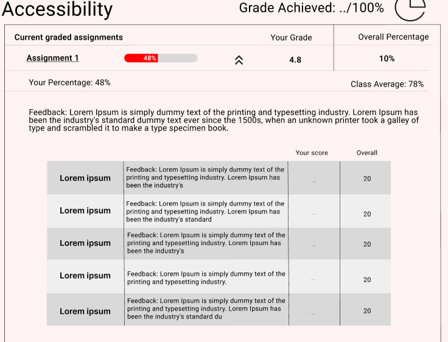
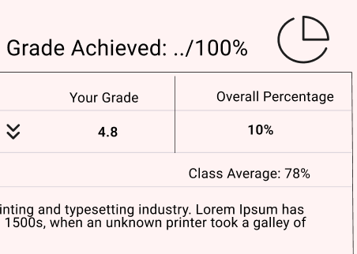
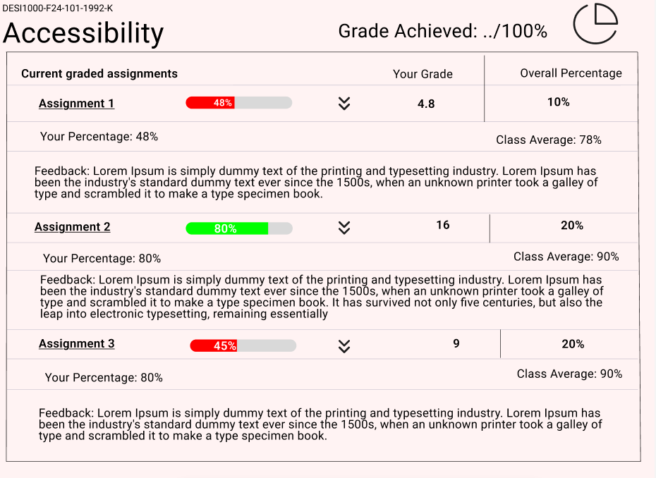
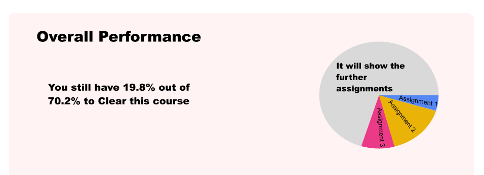
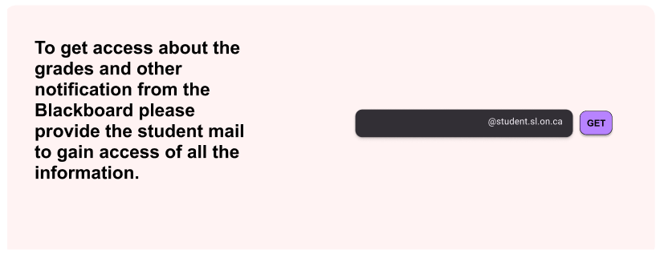

Through redesigning the grades section in Blackboard, I gained valuable insights into user-centered design, particularly in identifying and addressing usability gaps in educational platforms. I applied Nielsen’s heuristics and gathered feedback from students to understand their pain points, such as difficulties with grade weightings, lack of clear feedback visibility, and challenges in comparing grades with classmates. The struggle was in balancing comprehensive functionality with a streamlined, user-friendly interface, especially when optimizing for both desktop and mobile experiences. Overcoming these challenges involved iterative prototyping, refining interactions, and ensuring the final design supported clear, actionable feedback to enhance students' learning outcomes. This project strengthened my skills in user research, prototyping, and iterative design, highlighting the importance of continuous user testing to create intuitive and effective solutions.
These are some of the features that have been redesigned from the existing design.

Each course-specific grade page should provide a detailed breakdown of marks and evaluations, including assignment scores, weighted grades, and instructor comments. This transparency will help students understand their academic standing and areas requiring attention.

Comparative performance indicators can be integrated to help students understand their strengths and areas for improvement. By showing relative performance metrics—such as class averages, percentile rankings, or subject-specific trends—students can better gauge their standing and take proactive steps to enhance their learning.

As students complete assignments, their cumulative grade updates dynamically based on the weights of completed work. This approach helps students understand how each assignment influences their overall performance, allowing them to prioritize efforts on higher-weighted tasks while maintaining steady progress throughout the course.

Graphical representations, such as line graphs and progress charts, will help students visualize their academic journey over time. Seeing trends in their performance can motivate students to track their progress and make informed decisions about their learning strategies.

A notification system should be implemented to alert students as soon as feedback is available for their assignments or exams. Timely notifications via email or in-app alerts will ensure that students stay informed without constantly checking the portal, helping them engage with their evaluations more effectively.